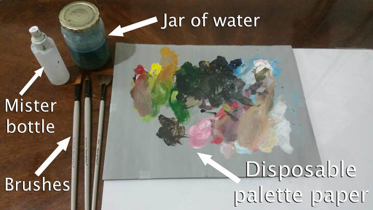
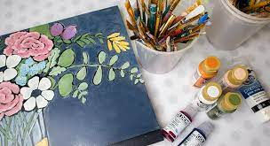
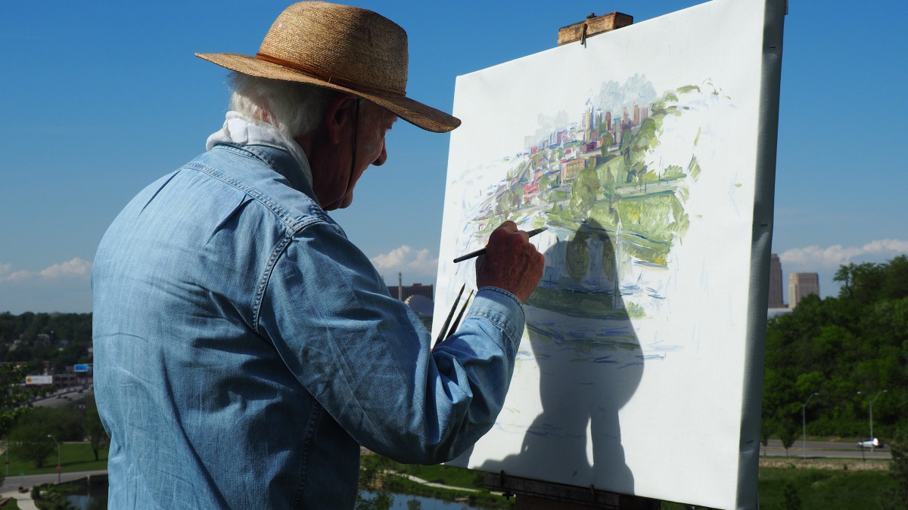
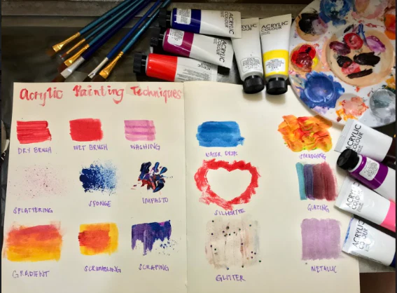
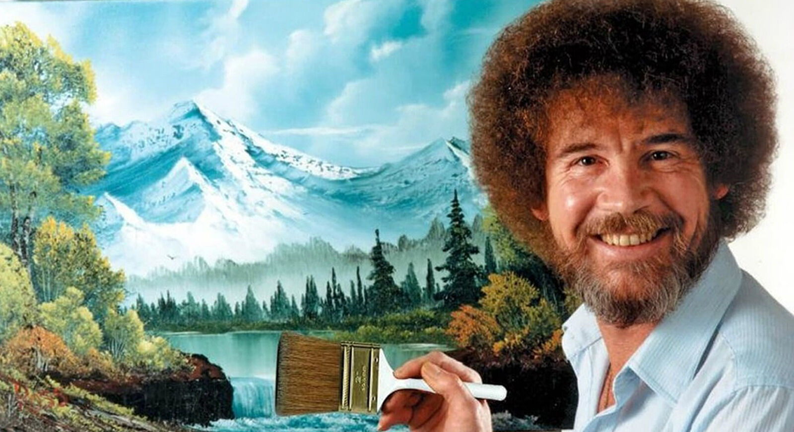

Welcome to Acrylic Painting!
Using acrylic paint is one way to paint on a canvas, and it’s a medium that offers a unique set of advantages. Personally, I love using acrylic for its expansive abilities—it dries at a reasonable pace, is easy to blend and build, and is incredibly versatile. Whether you’re creating delicate details or bold strokes, acrylic can handle it all. The picture below showcases a classic paint setup that can be used with any type of paint, but we’ll focus on acrylic! It's perfect for beginners and seasoned artists alike, offering a smooth learning curve while maintaining professional-level results.

About Acrylic Painting
Acrylic paints are incredibly versatile and easy to use, making them a popular choice for both beginners and professional artists. They dry quickly, allowing you to layer and refine your artwork without long waits in between. Plus, they can be used on many different surfaces, including canvas, paper, wood, and even fabric! This makes acrylics a great choice for a wide range of projects. Whether you’re painting large canvases or creating intricate details, acrylic paints offer flexibility, vibrant colors, and excellent coverage. They can be used in a variety of styles, from abstract art to detailed landscapes or portraits!

Best Times for Painting
The beauty of acrylic painting is that you can paint whenever inspiration strikes! Whether it’s a quiet morning with the soft glow of the sun or a creative evening with the calming ambiance of night, there’s always a time to create. The morning can provide you with fresh ideas from dreams and the energy to start your day with a burst of creativity. On the other hand, painting at night can be relaxing, offering you the chance to unwind and focus on your work after a busy day. The beauty of acrylics is that they are perfect for any time of day!
Perfect Places to Paint
You can paint anywhere! At home, in a studio, or even outdoors in nature. Acrylics are incredibly adaptable and can be used in a variety of settings. Whether you prefer the calm and comfort of your home or the inspiration of an outdoor landscape, acrylics provide the flexibility to work in any environment with how easy it is to move around. Painting outdoors, for example, can give you a unique perspective and allow you to capture the natural world around you. Whether you're inside or outside, the world is your canvas!

Acrylic Painting Techniques
One of the most exciting aspects of acrylic painting is the wide range of techniques you can explore. With acrylics, you can mix colors to create a custom palette, experiment with textures, and try out techniques like dry brushing, glazing, and pouring. Each of these techniques offer different results, allowing you to bring your creative vision to life in new and exciting ways. Dry brushing can create a textured, almost scratchy look, while glazing allows you to build up layers of transparent color for depth and dimension. Acrylics are the perfect medium for experimenting and exploring your artistic abilities!

Why We Love Acrylic Painting
Acrylic painting is not only a great creative outlet, but it’s also a wonderful way to relax and express yourself. The process of creating something beautiful with your own hands can help you build confidence in your art skills and allow you to see your progress over time. Plus, acrylics dry quickly, so you can see your work come together rapidly, making it a rewarding medium for those who like to see results. Whether you’re painting for relaxation, personal expression, or to create a masterpiece, acrylic painting can be an incredibly fulfilling experience!

AI Prompts Used
Questions asked to ChatGPT:
- What are some ideas for hobbies?
- How can I make my website more adaptive? It keeps getting stuck.
- What specific details can I add about acrylic painting?
- What should I focus on for the sections?
- How do I make only one section show at a time after clicking on the nav?